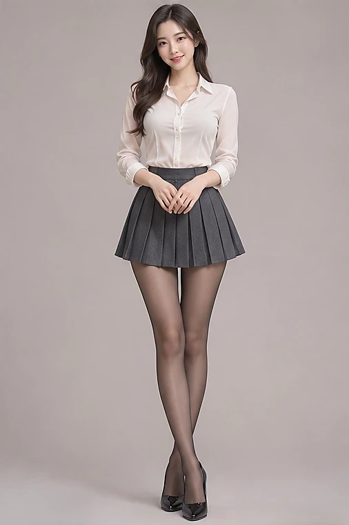
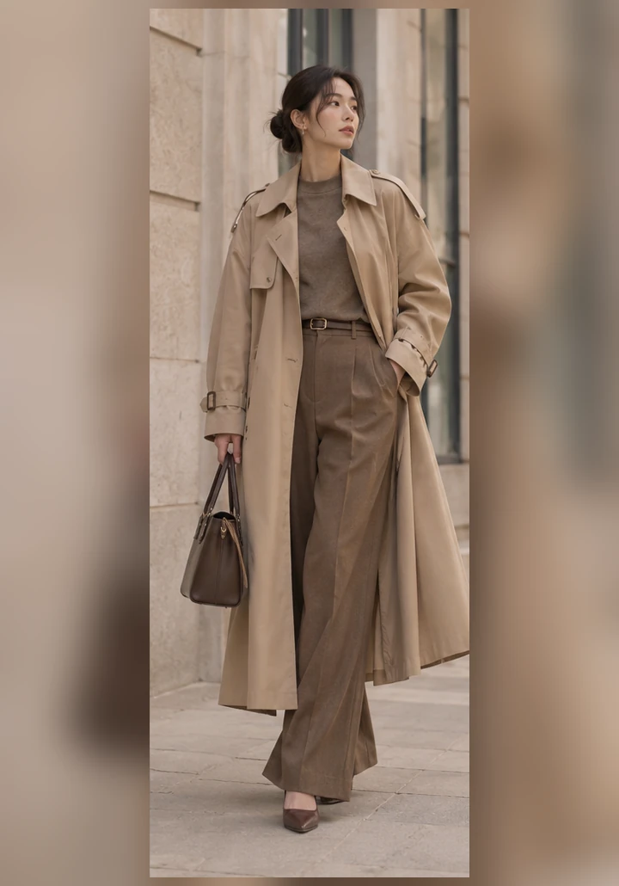
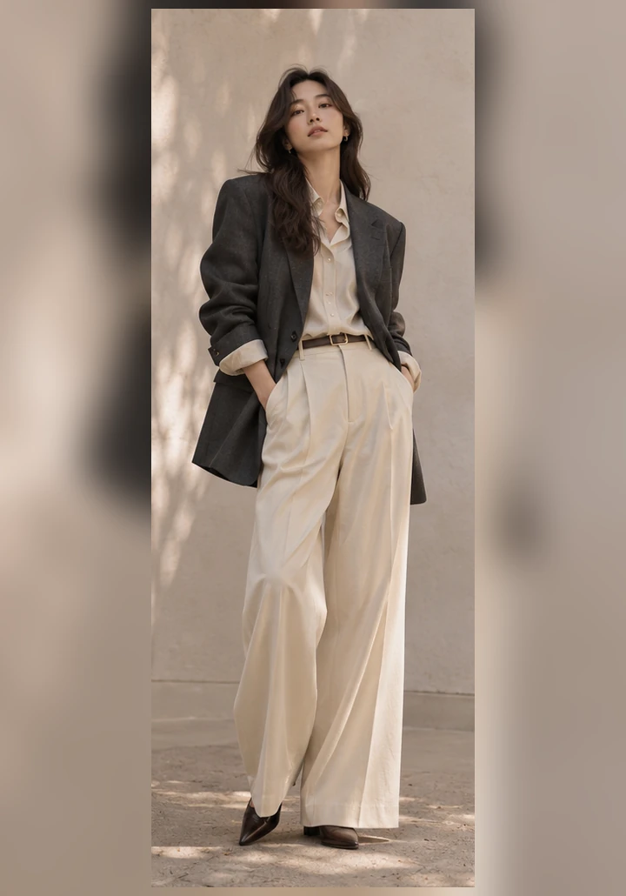
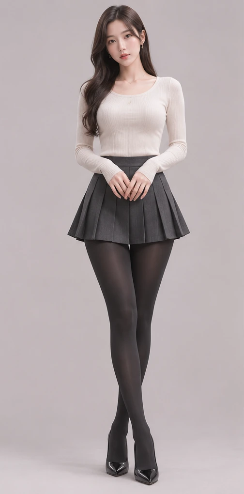
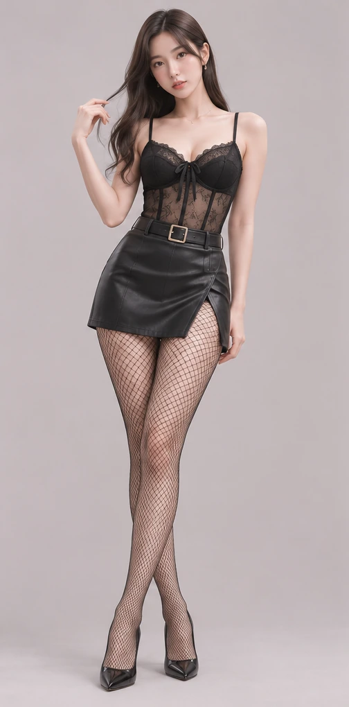
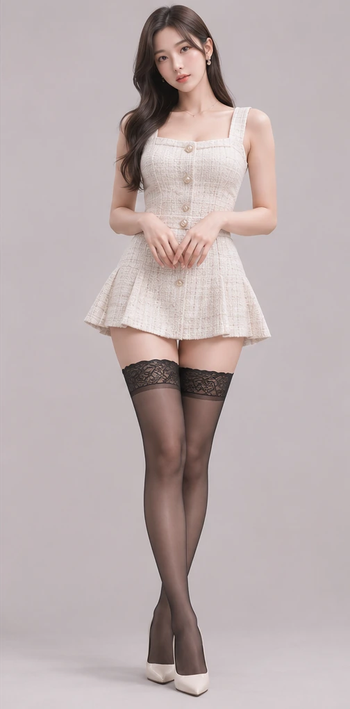
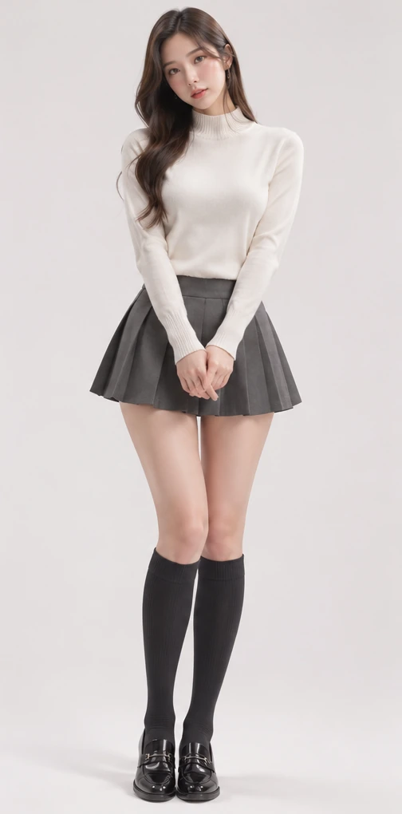
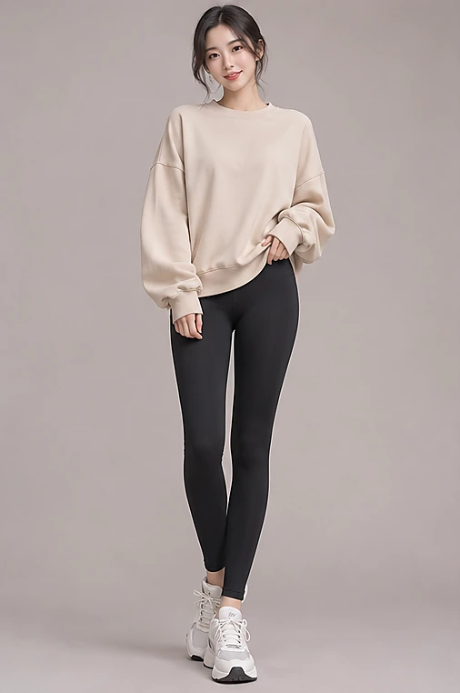

시어 타이츠Sheer · 얇고 비치는 편 PERSONAL STYLE JOURNAL VOL. 02 / 2026
Good style
is a feeling.
멋있게 입는다는 것,
나를 더 잘 이해하는 일.
실루엣과 컬러의 원리부터 매일의 코디까지. 취향을 발견하고 조합을 실험하는 새로운 패션 룩북.
01 / A NEW WAY TO DRESSSCROLL TO EXPLORE ↓

EDITOR'S SELECTIONQuiet Confidence
MAISON LOOK — EDITORIAL16CURATED LOOKS
12STYLE LESSONS
170+FASHION TERMS
“나에게 맞는 스타일”은 체형을 고치는 일이 아니라,
내가 좋아하는 표현을 발견하는 일입니다.
내가 좋아하는 표현을 발견하는 일입니다.
01 — THE EDIT
wear what moves you.Explore the looks.
좋아하는 무드를 찾고, 스타일의 디테일을 들여다보세요.
조건에 맞는 룩이 없습니다. 검색어 또는 필터를 바꿔보세요.
EDITORIAL NOTE · AI로 제작한 가상 패션 화보이며, 실존 브랜드의 제품 사진이 아닙니다.코디 원리도 알아보기 ↗
02 — THE EXPERIMENT
Style laboratory.
사진 위 핸들을 움직이며 스타일의 차이를 관찰해보세요.

LOOK ALOOK B↔DRAG TO COMPARE ↔
A / B VISUAL STUDY
레이어 길이의 차이
비교 사진은 서로 다른 가상 모델·의상을 사용한 스타일 연출의 예시입니다. 동일 인물의 전후 변화나 체형 개선 효과를 뜻하지 않습니다.
관련 스타일링 원리 읽기 ↗03 — THE LEARNING ROOM
STYLE SCHOOLThe art of dressing.
단순한 팁이 아닌, 바로 시도할 수 있는 12개의 스타일 수업.
EST. 2026
LEARN / TRY / REFLECTLESSONS 01—12
CHECK YOUR KNOWLEDGE
읽었다면, 이제 확인해볼까요?
의류 용어와 스타일링 원리를 퀴즈로 복습하세요.
04 — THE FASHION LIBRARY
Know your wardrobe.
이름을 알면 옷을 보는 눈도 달라집니다. 의류 종류부터 소재와 디테일까지.
VOLUME 03 · TRUE-SIZE PHOTO EDITIONIMAGE-LED GARMENT GUIDE
옷의 이름을 사진으로.
플리츠 스커트부터 새틴 드레스·핫팬츠·스타킹·레깅스까지. 형태를 직접 관찰하고, 비슷한 용어의 차이를 이해하는 비주얼 패션 아틀라스입니다.
58VISUAL GUIDES
THE VISUAL ATLAS / 2026
Garment index.
사진을 선택하면 의류의 특징과 식별 포인트, 실제 코디 팁을 확인할 수 있습니다.
PHOTO GUIDESSELECT AN IMAGE TO LEARN ↗
조건에 맞는 이미지 용어가 없습니다. 검색어를 바꾸거나 아래 전체 의류 백과를 이용해 주세요.
VISUAL DISCLOSURE · 모든 의류 카드 이미지는 AI 실사풍 패션 화보입니다. 이전 버전의 그림형 카드 자산 30개를 사진으로 교체했습니다. 일부 비슷한 스타일에는 기존 화보를 재사용했으며, 정확히 동일한 의복이 아닌 경우 상세 화면에 한계를 표시합니다. 용어는 브랜드·지역에 따라 다를 수 있습니다.
LEGWEAR EDITION · NEW IN V3
Stockings, tights & leggings.
스타킹은 모두 같은 옷이 아닙니다. 길이, 발끝 유무, 투명도, 망 조직을 비교하세요. 아래는 사진이 아닌 선명한 형태 도해입니다.

오페이크 타이츠Opaque · 두껍고 덜 비침
피시넷 타이츠Fishnet · 열린 망조직
홀드업 스타킹Hold-ups · 허벅지까지
니하이 삭스Knee-high · 무릎 아래
레깅스Leggings · 발끝이 열림스타킹 데니어(D) 이해하기
데니어는 실 9,000m의 무게(g)를 나타내는 단위입니다. 비침 정도의 절대 기준은 아니며, 실제 투명도는 편직·색상·신장 정도에 따라 달라집니다.
수치는 이해를 돕는 예시입니다. 제조사에 따라 경계와 비침 수준이 다릅니다.VISUAL EXPLAINER
비슷하지만, 다른 옷.
사진 두 장으로 실루엣의 차이를 빠르게 비교합니다.
THE COMPLETE FASHION DICTIONARY
글로 익히는 A—Z.
사진으로 보기 어려운 구조·소재·네크라인·소매·패턴까지 함께 찾아보세요.
Fashion dictionary A—Z
찾고 싶은 종류를 선택하거나 패션 용어를 검색하세요.
05 — THE COLOR STUDY
Color is emotion.
컬러는 정답을 맞히는 시험이 아닙니다. 서로 다른 색을 놓아보고 원하는 분위기를 고르는 감각을 길러보세요.
01 넓은 면적의 베이스 컬러를 정합니다.
02 밝고 어두운 차이로 리듬을 만듭니다.
03 소재와 액세서리로 포인트를 더합니다.
THE PALETTE BOARDSELECT A MOOD ↓
Quiet Luxury
색상 칸을 누르면 HEX 코드가 복사됩니다. 실제 색은 화면·조명·소재에 따라 다르게 보입니다.
06 — THE OUTFIT STUDIO
Find your combination.
오늘의 목적과 무드를 골라 코디 아이디어를 만들어보세요.
✧Your next look
Your next look
starts here.
왼쪽에서 세 가지 조건을 선택하고 조합해보세요.
07 — YOUR PERSONAL EDIT
Your wardrobe, your story.
좋아한 룩을 모으고, 내 코디를 사진과 함께 기록해보세요.
01 / SAVED LOOKS
룩북에서 더 찾기 ↗내가 좋아한 화보
02 / CAPSULE CHECKLIST
나의 옷장 점검표
필수 구매 목록이 아닙니다. 이미 가진 아이템을 체크하는 자유로운 메모입니다.
기록한 아이템 0 / 14
03 / MY OUTFIT DIARY
나만의 코디 다이어리
오늘 입은 옷과 느낀 점을 남기세요. 사진은 내 브라우저에만 저장됩니다.
아직 작성한 기록이 없습니다.
오늘의 스타일을 첫 페이지로 남겨보세요.
오늘의 스타일을 첫 페이지로 남겨보세요.